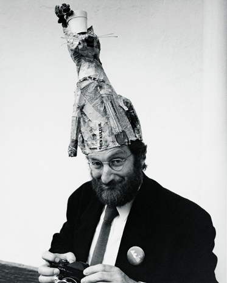
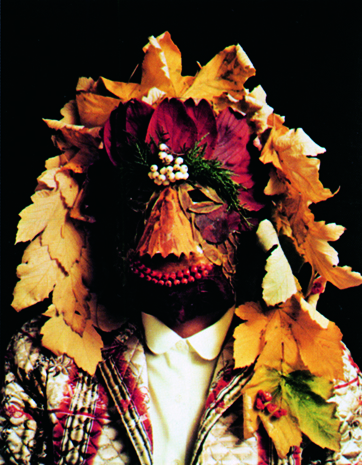
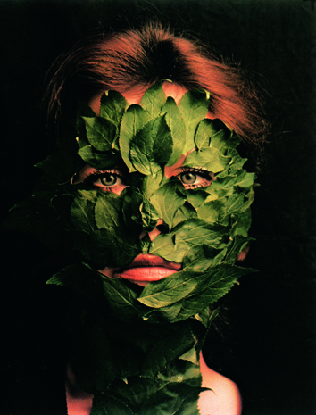
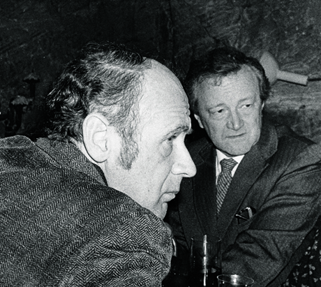
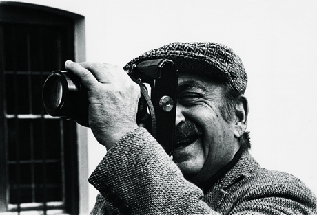
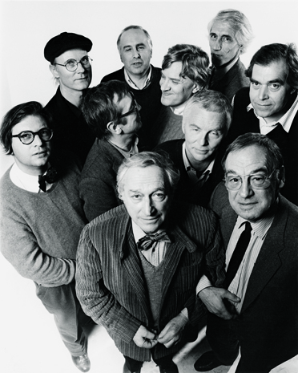
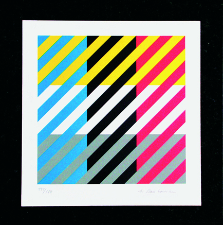

1980s : New Waves Violating Old Rules
Rolf Müller was the organizer and his achievements were commendable. The main dish on the menu was the personal presentation without words with, as ‘non-speakers’, Shigeo Fukuda, Franco Grignani, Marte Röling, Arnold Schwartzman and Anton Stankowski. The advantage of these performances was that work had to speak for itself in the absence of the usual ex-Babylonian exercises from word-wizard Henrion. This form was often repeated in subsequent years. Arnold turned it into a small-scale life story, to the accompaniment of music.
What Is A.G.I?
Inwards
The AGI unites the world's leading graphics designers and artists in a professional club of common interest and achievement. It is an élite club. Its members have been collectively responsible for the identity design of most of the world's top corporations and institutions as well as for countless examples of globally known packaging, publications, illustration and posters. The AGI provides for friendship, mutual respect and the enjoyment of the company of the like-minded - even reassurance in the face of a sceptical world. Ideas and experiences are exchanged informally at periodic meetings and by letter, email and fax. All members may also attend the AGI Congress, which involves a more formal business and social agenda. A different country hosts the Congress each year and presents its own history, members' work and professional achievements in art, commerce and education.
Outwards
The role and importance of the AGI within the professional field of graphic design is clearly different from the existing national and international professional organisations. In recognition of this context, the AGI is also a platform for activity. It has a task to tell the world and change it. Through the relationships and interaction of its members, the AGI promotes graphic design in lectures, education and publishing. It encourages knowledge and understanding among the young and fosters contacts with other institutions, organisations and companies involved in graphic design.
The AGI holds exhibitions of members work which are highly influential in disseminating new forms, techniques and ideas. There is a book publishing programme based on the thoughts and works of members. There are contacts with colleges and schools, government bodies and commercial institutes, all aimed at promoting graphic design and visual literacy.
Backwards
In the 1940s, commercial artists, mural makers, typographers, printmakers, art directors, illustrators and poster designers increasingly realised their common bonds, and the modern profession of graphic design began to be defined. In 1951, five graphic artists - two Swiss and three French - decided to formalise their relationship into some sort of association. Their idea was simply to share common interests and friendships across national and cultural borders.
It was a notion that soon attracted leading exponents of the graphic arts from elsewhere in Europe and in the USA. In 1952 the Alliance Graphique Internationale was incorporated in Paris with 65 members from 10 countries. The first AGI exhibition was held in Paris in 1955 and in 1969 the headquarters moved from Paris to Zurich. Student seminars were introduced in 1979 and the first Young Professional AGI Congress was held in London in 1994.
Forwards
An explosion of global communications is changing the world. Powered by media like television and the internet, a common visual language is forming as symbols and images become the world's universal vernacular. The original members of the AGI were responsible for creating many elements of this new language. As the world turns, their successors - exponents of the traditional and the new media - are becoming members of the AGI themselves. Today there are around 370 from Africa, America, Australia, Asia, the Middle East and Europe - 32 countries in all.
Membership of the AGI requires reputation and achievement of the highest order and commitment to the processes of visual learning and perception, unfettered by cultural differences. The AGI remains dedicated to the universal aspect of graphic design as a means of communication and information, and its ideals remain relevant to the new world of visual literacy which its members have helped to bring about.
1981 : Paris
×

1981: back together in Prague. With Russian occupiers still in the oppressed city and an economy plagued by the strictly controlled borders, hosting the AGI congress in the beautiful, but dejected city was a major feat for our Czech friends, under the direction of Stanislav Kovár. Despite the oppression, the congress participants were able to see the rich cultural treasures from better times. Baroque architecture galore, ecclesiastical grandeur, gothic, Prague Castle with its museum full of fantastic antiques. The walkway to the old Jewish cemetery in the middle of the city took on the fleeting ambiance of dark skies and a heavy rain shower. There was an excursion to a Museum of the Book, which was some way away; the coach was not allowed to go faster than 70 km/h and no amount of promises on our behalf to pay any speeding fines fell on deaf ears. Yet more baroque in a little church designed by the famous architect Jan Santini.That year’s silent slide-shows came from Heather Cooper, Ernst Roch, Richard Hess and me. In general, they were about more than just design. Herb Lubalin had died in the spring of 1981 and was remembered warmly.
At the end of the congress, there was a big surprise: Josef Svoboda of the ‘Laterna Magika’ and his unbelievable theatrical techniques finally appeared from the wings. None of the foreigners had ever had a chance to meet him. Worse still, some people thought he didn’t exist and was merely one of his own magical creations! Walter Allner called out: ‘So he is real!’ That evening we were treated to a visit to his enchanted theatre and a glass of his wine. Wine, real Pilsner, and lots of rich food in dark cellars are among our recollections of Prague, except in those cases where these were enjoyed to the point where there were those who have no idea how they got back to the hotel, let alone how we managed to leave Prague in good health. This was the decade of seminars. Paris 1981: an audience of 350 (80 percent students) from 20 design schools listened attentively to Paul Davis and Saul Bass (USA), Alan Fletcher and FHK Henrion (UK) and Shigeo Fukuda (Japan), leaving a varied impression of our many-faceted profession.
>
1982 : Montreal
×

In 1982, the AGI congress was held in Montreal. Prior to the event, 500 students in Toronto saw and heard a string of prominent AGI members over the space of three days, organized by Robert Burns (Canada), in collaboration with York University. James Cross, Wim Crouwel, Alan Fletcher, Shigeo Fukuda, Henrion, Richard Hess, Woody Pirtle, Henry Steiner, Massimo Vignelli, Jim Donoahue, Rolf Harder and Burton Kramer lectured on design.
The Montreal congress was the excellent handiwork of Rolf Harder, Ernst Roch and Jean Morin. The ‘slides without words’ were presented this time by Walter Allner (‘from Bauhaus to Fortune’), Fukuda (with Kabuki theatre masks) and Rolf Müller, who took us on a virtual trip to his studio in Munich. There was a coach tour through Montreal, with a visit to the Olympic sites, and a champagne déjeuner sur l’herbe in the garden of the National Museum, laid on by the city. Everyone signed the guest book. The AGI poster show hung in the lobby of Place Ville-Marie. The collection, old and new and from half the world, inspired Rudi de Harak’s AGI Poster Book 1960–1985, published in 1986. The National Film Board of Canada showed films and Gunter Rambow projected posters by Rambow, Lienemeyer and Van de Sand.
<
>
1983 : Amsterdam
×

In 1983, AGI, Icograda and the Amsterdam Gerrit Rietveld Academy cooperated in a huge seminar. Again a full house of 500 students, listening to heavy discussions on form and content. On the stage were greats from design education: Jurriaan Schrofer, Wim Crouwel, Jan van Toorn, Ootje Oxenaar, Anthon Beeke and Simon den Hartog (The Netherlands), flanked by the great Swiss innovator Wolfgang Weingart, the German Gunter Rambow and the Pole Waldemar Swierzy. These teachers’ objectives and ideals often differed dramatically.Where, with Crouwel, the emphasis was on exact designing (developing skills, theory and general knowledge), Van Toorn attached the greatest importance to the social context of working in this profession. They did, however, agree about the responsibility of the designer. Rambow felt it is the designer’s task to discover forms of ‘Utopian hope’.
<
>
1986 : Holland
×

1986 was the year of frequent plane hijacks and the enormous ecological drama of Chernobyl. The destructive nuclear rains also washed away numerous US tickets to AGI Holland; there were some 40 no-shows! Amsterdam’s Stedelijk Museum devoted a small honorary exhibition to Willem Sandberg, who had died in 1984. It was there that the starting shot was fired for that year’s congress. We were transported in a steamboat that had once belonged to Queen Wilhelmina to Weesp, where the mayor and the fanfare were awaiting us on a red carpet leading to the big Marte Röling & Co. studio, for a candle-lit Indonesian meal and piano accompaniment from maestro Louis van Dijk. The nocturnal trip to a hotel in Oosterbeek. The Kröller-Müller Museum, with its vast sculpture garden and the nearby monumental St Hubertus hunting castle, which had lent its auditorium for the presentations and the members’ meeting. There were talks by Pieter Brattinga (on the Netherlands’ role in the history of graphic design) and Deborah Sussman (on the decoration of the 1984 Los Angeles Olympics). There was a sun-drenched excursion to the scenic Betuwe region. Lunch under the blossoming cherry trees. Ootje Oxenaar was holding an exhibition in the area in the gallery De Kijkschuur and told the story of the Dutch Post Office (PTT) and his unique banknotes. Jelle van der Toorn talked about CAD. Kurt Wirth about Carigiet. There was a long film about Herbert Bayer. Cycling is a Dutch sport that became international around the Kröller-Müller. The Italians surprised us with a charming booklet, Omaggio all’Olanda. The final dinner was given in Doorwerth Castle (dating from 1280), with entertainment from a group of modern dancers directed by Ingeborg Bos. The gorgeous, efficient congress crew also received a great deal of praise.
<
>
1987 : New York
×

The students had held their AGI seminar in Amsterdam’s Rietveld Academy, including a wonderful performance by 76-year-old Leo Lionni, who had lived in the Netherlands as a child and now, to everyone’s amazement, had quickly supplemented his vocabulary with the most current youth lingo. Ken Cato had cancelled, but the 300 students were treated to a spontaneous show, ‘Vignelli from A to Z’, as a superb replacement.
On the other side of the Atlantic the students were welcomed to a seminar in the New York Grand Hyatt Hotel. For 1987, AGI had lined up Massimo Vignelli, Colin Forbes, Seymour Chwast, April Greiman and Ootje Oxenaar. Massimo was now the new international president. He opened the seminar with a speech in which he stressed the importance of the historical and social context of design. The speakers had been given the theme of the approach and results of their commissions. Oxenaar, with his range of unique Dutch banknotes and his responsibility for the artistic commissions for the Dutch Post Office, earned great admiration.
The AGI Congress for that year was, once again, situated on a mountaintop: Bürgenstock, near Lucerne. It had become a new custom for the hosting country to profile itself in the presentations. Armin Hofmann gave a talk on the entire development of the Swiss poster tradition. Anton Stankowski harked back to the pre-war period in which he contributed to the birth of ‘Swiss Design’. Adrian Frutiger told us the story of his Univers. Ruedi Külling spoke of the great service of Walter ‘Graphis’ Herdeg, who then received a standing ovation from the congress participants. In the evening, Ruedi Rüegg came up with a wonderful nightcap: the story of the numerous Swiss design migrants who, like missionaries, blazed a trail of top quality across the world.
The next day was devoted to Swiss design education. Wolfgang Weingart with his experiments with new equipment in Basel, Bruno Monguzzi (Lugano) with the accent on the ideas, Ernst Hiestand, who was experimenting in Zürich with self-education – something you would not really expect from the Swiss. Together, we all produced an AGI cookery book: a binder of our own culinary tips, such as – what else? – Saul Bass’s Striped Bass. The Swiss had set up an exhibition of all the covers of Graphis for the entire period of 40 years. In the evening, April Greiman gave a spectacular performance with ‘The Today of Tomorrow’. The show was in sharp contrast to Jan Rajlich’s presentation of the Warsaw Biennale. Heinz Waibl commemorated Giulio Cittato, who had died six months earlier, a talented, amiable young designer. We had also lost the Swede Martin Gavler. Pieter Brattinga presented a booklet of his speech from the previous year on the Dutch contribution to graphic design. All in all, we had a great time on the mountaintop. A wonderful programme. And then there was the trip on Lake Lucerne in an old paddle steamer.
<
>
1988 : New York
×

In 1988, there was another student seminar in New York, at Cooper Union, this time under the title ‘Sequential Design’. Henrion organized the seminar and was chairman. Arthur Paul, Milton Glaser, Matthew Carter, Paul Davis and Lou Dorfsman spoke. 300 US students and lecturers, plus an army of British colleagues came to listen and watch.
The meeting in Tokyo, 1988, was a great adventure for all those who had to come a long way. AGI treated the students, teachers and the general public to a 2-day pre-conference event at the IBM Tokyo Headquarters. Colin Forbes presented the work of many designers around the world and Grapus showed a selection of their designs for cultural institutions in France. Henry Steiner talked about the interaction between cultures in Hong Kong and Massimo Vignelli gave a presentation about 2D and 3D work. Kamekura presented his corporate identity and corporate culture works.
Drum rolls accompanied the opening session of this congress that was to become one of the most memorable so far. The Japanese hosts demonstrated their great talents in a broad field of design: from interiors to graphics, from furniture to architecture and fashion. Eiko, Ando, Isosaki, Issey Miyake, Kamekura, Shigeru Uchida, and Ikko Tanaka were highlighted. The Art Directors Club showed the selected posters of young Saito and other outstanding designers. A boat tour and, of course, the Japanese-style dinner concluded a glorious day.
On the second day Nagai gave a lecture on 40 years of graphic design in Japan and the new AGI members Pierre Bernard and Gérard Paris-Clavel presented their philosophy and work: solid involvement and political commitment. It was a stimulating, yet controversial injection into the hitherto Helvetica-dominated AGI. In the evening there were presentations of fantastic calligraphy and TV commercials (Eiko Ishioka and Katsumi Asaba). More fashion appeared on stage the next morning: Ikko Tanaka and Takenobu Igarashi had been producing the graphics for top textile designers. At the members’ meeting, Jacqui Morgan presented a slide show in memory of Tomás Gonda, who had recently passed away. James Cross was elected as international president of AGI. AGI Tokyo had been a great, overwhelming treat for some 90 members and guests.
<
>
1989 : Alpbach
×

Alpbach revisited, 1989. We met in the Neue Sammlung in Munich, a favourite spot for poster lovers. ‘Captain’ Rolf Müller and his crew put the party on the bus and packed them off, out of the country: Alpbach is in Austria. The Böglerhof, where we were staying, dates back to 1470 and was both an inn and a law court. The first evening started harmoniously with Annette Brattinga at the grand piano and Bach’s Italian Concerto BWV 971; she was to perform several times more during AGI Alpbach. The following morning (Saturday) was spent taking a short ‘low alpine’ walk. In the afternoon, German students showed the work they had produced for their finals and there was a puzzle slide show: who made what? Each participant had brought two slides along for the puzzle. In the evening, there was the first of the six usual ‘presentations without words’. Who gave it, we no longer know.
Sunday was a long session. A series of 8 to 10 international experts (philosophers, poets, lawyers) debated the issue of truth and lies in photography. Monday was reserved for major issues: the morning for the members’ meeting and the afternoon for ‘constructing headgear’ and FHK Henrion’s presentation of his long-awaited book, AGI Annals, the predecessor of this book. Henri gave the first copy to AGI chairman James Cross. The book was largely his baby: he wrote it, gathered all the information, designed it and took care of its realization. John McConnell and Henri’s own Marion Wesel had supported him over the years it had taken to write the book. A mammoth task, certainly in the light of his seriously ailing health. A unique moment in the history of AGI. The boxes were opened and everyone was delighted.
<